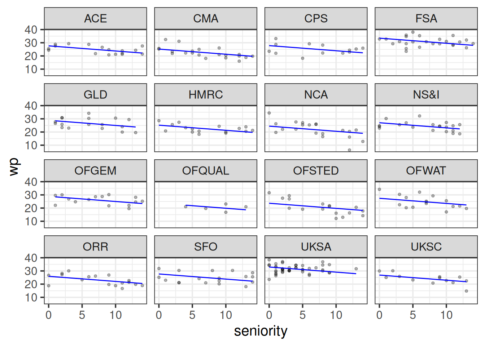
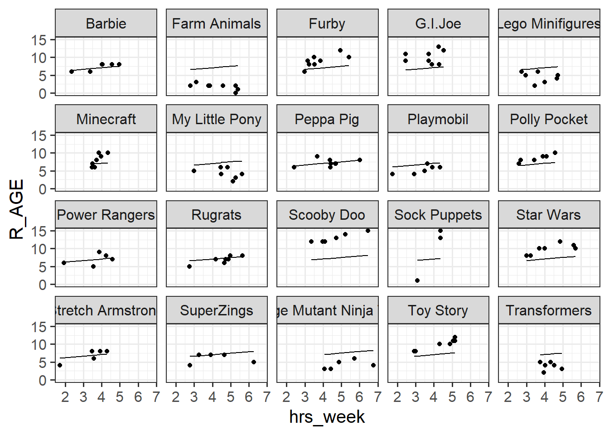
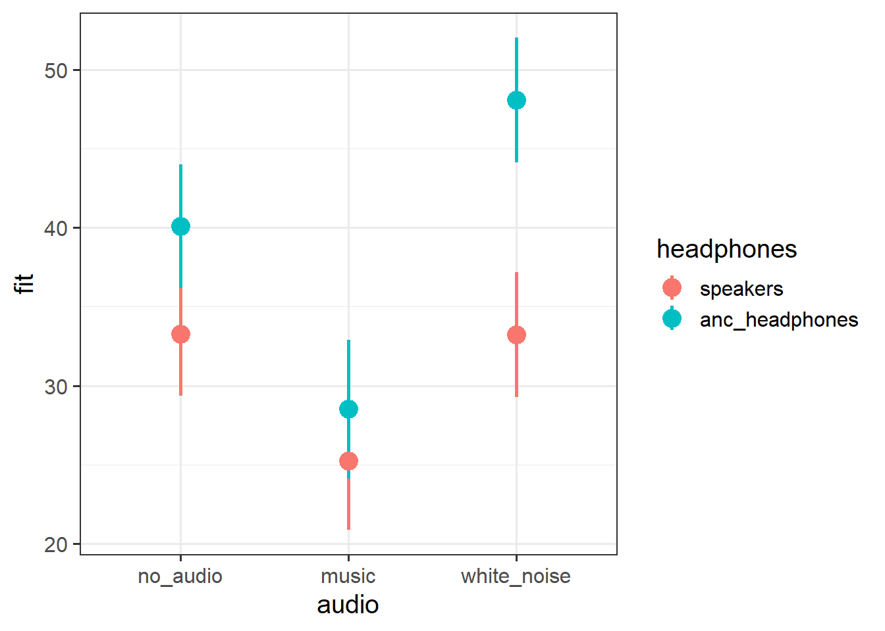
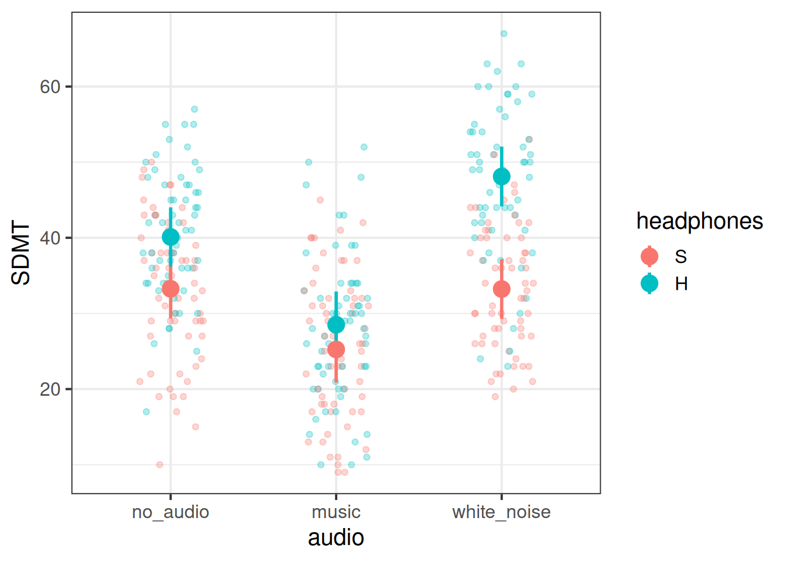

For our first foray into the multilevel model, we’re going to start with little toy example, and we’re just going to ask you to plot the predictions from a) a simple linear model, b) a model with a random intercept, and c) a model with random intercepts and slopes.
This is to build the understanding of the structure of multilevel models. When it comes to actually building models for research purposes, it is not necessary to slowly build up the complexity in this way.
Data: New Toys!
Recall the example from last semesters’ USMR course, where the lectures explored linear regression with a toy dataset of how practice influences the reading age of toy characters (see USMR Week 7 Lecture). We’re going to now broaden our scope to the investigation of how practice affects reading age for all toys (not just Martin’s Playmobil characters).
You can find a dataset at https://uoepsy.github.io/data/toy2.csv containing information on 129 different toy characters that come from a selection of different families/types of toy. You can see the variables in the table below1.
variable
description
toy_type
Type of Toy
year
Year Released
toy
Character
hrs_week
Hours of practice per week
R_AGE
Reading Age
Question 1
Read in the data and plot the relationship between hours-per-week practice (hrs_week) and reading age (R_AGE).
Facet the plot by the type of toy.
Below is the code to fit a simple linear model and produce some diagnostic plots.
After running the code, do you think that we have violated any assumptions?
mod1 <-lm(R_AGE ~ hrs_week, data = toy2)plot(mod1)
We have violated an assumption here, and we don’t need to look at the plots to realise it! As it happens, the plots don’t actually look terrible (the scale-location plot is a bit meh, but other than that things look okay).
The assumption we have violated is that of independence. This is something we know through our understanding of the sampling procedure that has led to this data. We have got a random sample of different types of toys (e.g. power-rangers, toy-story, furbies etc), and within those types, we have a random sample of characters.
But it is entirely likely that the type of toy is going to influence their reading age (i.e. farm animals might read worse than playmobil, etc).
So this is something we can’t really “see” in the data - we have to think. What do we know about the data generating process? (i.e. the process that led to this data)
mod1 <-lm(R_AGE ~ hrs_week, data = toy2)plot(mod1)

Question 3
There are lots of ways in R to get predicted values for a linear model (e.g. we saw augment() a lot in USMR).
The simplest way is to use functions like predict() or fitted() (they do the same thing), which gives us a vector of predicted values, which we can append to our dataframe (provided we don’t have missing data):
data$predictedvalues <-predict(model)
Add the predictions from the linear model in the previous question to the facetted plot that you created in the earlier question. How well does the model fit each type of toy?
This only works because we don’t have missing data (and so the length of predict(mod1) is the same as nrow(toy2), and the predictions are in the correct order)
# add predictions to data:toy2$pred <-predict(mod1)
# plot both predictions and observations:toy2 |>ggplot(aes(x=hrs_week))+geom_point(aes(y=R_AGE)) +# observationsgeom_line(aes(y=pred)) +# predictionsfacet_wrap(~toy_type)

Question 4
Load the lme4 package, and fit a model with random intercepts for each toy type.
Using either predict() again, or this time you can use augment() from the broom.mixed package, plot the predicted values and the observations.
Here’s our model, with a random intercept by toy-type:
library(lme4)library(broom.mixed)mod2 <-lmer(R_AGE ~1+ hrs_week + (1| toy_type), data = toy2)
We can use augment() from the broom.mixed package, and which gives us the variables in the model along with things like fitted values (in the .fitted column)
Note that the model predictions are now a lot better than they were for the single level linear model. The line has moved up for the “Scooby Doos”, and down for the “Farm Animals”, etc. But the lines are all still the same slope. The slope is “fixed”.
Question 5
Now fit a model with random intercepts and slopes for each toy type.
As before, plot the predicted values of this model alongside the observations
This looks even better - the lines are at good heights and good angles for each type of toy. Why? Because we have modelled the intercept (line height) and slope of hrs_week (line angle) as varying across types of toy!
Question 6
Finally, add a geom_smooth to the plot from the previous question (making sure that this is has y=R_AGE).
This will add a separate linear model lm() line for each of the facets in the plot.
What differences (look closely!) do you notice between the predictions from the model with random intercepts and slopes, and the simple geom_smooths?
Hints
You could try changing col, lty, and lwd to make things easier to see.
What we’re doing here is showing to ourselves ‘partial pooling’ in action (1B #partial-pooling).
For most of the toy types things look pretty similar. However, for “Sock Puppets” (only has 3 data points) the model predicted slope is shrunk back towards the average. It is also possible to see this in the “Farm Animals” and “Scooby Doo” - the shrinkage is more noticeable on these because they are further away from the average.
Question 7
Here is the model with the random intercepts (but not random slopes) that we fitted in an earlier question.
Below is the code that produces a plot of the fitted values:
mod2 <-lmer(R_AGE ~1+ hrs_week + (1| toy_type), data = toy2)summary(mod2)
Linear mixed model fit by REML ['lmerMod']
Formula: R_AGE ~ 1 + hrs_week + (1 | toy_type)
Data: toy2
REML criterion at convergence: 544.7
Scaled residuals:
Min 1Q Median 3Q Max
-4.8809 -0.4687 0.0541 0.5579 3.3220
Random effects:
Groups Name Variance Std.Dev.
toy_type (Intercept) 7.278 2.698
Residual 2.550 1.597
Number of obs: 129, groups: toy_type, 20
Fixed effects:
Estimate Std. Error t value
(Intercept) 4.2594 0.9157 4.652
hrs_week 0.7118 0.1651 4.312
Correlation of Fixed Effects:
(Intr)
hrs_week -0.736
Match the parameters from the model equation, as well as coefficients from model output, to the corresponding points on the plot of fitted values.
Model Equation
A1:\(\sigma_{0}\)
A2:\(\sigma_{\varepsilon}\)
A3:\(\gamma_{00}\)
A4:\(b_{1}\)
Model Output
B1: 0.7118
B2: 2.698
B3: 1.597
B4: 4.2594
Plot of fitted values
C1: the standard deviation of the distances from all the individual toy types lines to the black line
C2: where the black line cuts the y axis
C3: the slope of the black line
C4: the standard deviation of the distances from all the individual observations to the line for the toy type to which it belongs.
A1 = B2 = C1
A2 = B3 = C4
A3 = B4 = C2
A4 = B1 = C3
Cross Sectional: NEW
employee / department example
q1 = give code to fit fe, ri, rs models and add them to the plot run it one by one and see how the plot changes
q2 = mapping question
Repeated Measures: Audio Interference in Executive Functioning
Data: Audio interference in executive functioning
This data is from a simulated study that aims to investigate the following research question:
How do different types of audio interfere with executive functioning, and does this interference differ depending upon whether or not noise-cancelling headphones are used?
30 healthy volunteers each completed the Symbol Digit Modalities Test (SDMT) - a commonly used test to assess processing speed and motor speed - a total of 15 times. During the tests, participants listened to either no audio (5 tests), white noise (5 tests) or classical music (5 tests). Half the participants listened via active-noise-cancelling headphones, and the other half listened via speakers in the room. Unfortunately, lots of the tests were not administered correctly, and so not every participant has the full 15 trials worth of data.
Audio heard during the test ('no_audio', 'white_noise','music')
headphones
Whether the participant listened via speakers in the room or via noise cancelling headphones
SDMT
Symbol Digit Modalities Test (SDMT) score
Question 8
How many participants are there in the data?
How many have complete data (15 trials)?
What is the average number of trials that participants completed? What is the minimum?
Does every participant have some data for each type of audio?
Hints
Functions like table() and count() will likely be useful here.
For a quick “how many?”, functions like n_distinct() can be handy:
n_distinct(efdat$PID)
[1] 30
Which is essentially the same as asking:
unique(efdat$PID) |>length()
[1] 30
Here are the counts of trials for each participant.
efdat |>count(PID)
# A tibble: 30 × 2
PID n
<chr> <int>
1 PPT_01 13
2 PPT_02 12
3 PPT_03 10
4 PPT_04 10
5 PPT_05 10
# ℹ 25 more rows
We can pass that to something like summary() to get a quick descriptive of the n column, and so we can see that no participant completed all 15 trials (max is 14). Everyone completed at least 10, and the median was 12.
efdat |>count(PID) |>summary()
PID n
Length:30 Min. :10
Class :character 1st Qu.:11
Mode :character Median :12
Mean :12
3rd Qu.:13
Max. :14
We could also do this easily with things like:
table(efdat$PID) |>median()
[1] 12
For this kind of thing I would typically default to using table() for smaller datasets, to see how many datapoints are in each combination of PID and audio:
From the above, we can see that everyone has data from \(\geq 2\) trials for a given audio type.
table(efdat$PID, efdat$audio) |>min()
[1] 2
a tidyverse way:
When tables get too big, we can do the same thing with count(), but we need to make sure that we are working with factors, in order to summarise all possible combinations of groups (even empty ones)
efdat |>mutate(PID =factor(PID),audio =factor(audio)) |># the .drop=FALSE means "keep empty groups"count(PID,audio,.drop=FALSE) |>summary()
PID audio n
PPT_01 : 3 music :30 Min. :2
PPT_02 : 3 no_audio :30 1st Qu.:4
PPT_03 : 3 white_noise:30 Median :4
PPT_04 : 3 Mean :4
PPT_05 : 3 3rd Qu.:5
PPT_06 : 3 Max. :5
(Other):72
There are plenty of other ways (e.g., you could use combinations of group_by(), summarise()), so just pick one that makes sense to you.
Question 9
Consider the following questions about the study:
What is our outcome of interest?
What variables are we seeking to investigate in terms of their impact on the outcome?
What are the units of observations?
Are the observations clustered/grouped? In what way?
What varies within these clusters?
What varies between these clusters?
What is our outcome of interest?
SDMT scores
What variables are we seeking to investigate in terms of their impact on the outcome?
audio type and the interaction audio type \(\times\) wearing headphones
What are the units of observations?
individual trials
What are the groups/clusters?
participants
What varies within these clusters?
the type of audio
What varies between these clusters?
whether they listen via headphones or speakers
Question 10
Calculate the ICC, using the ICCbare() function from the ICC package.
How much of the variation in SDMT scores is attributable to participant level differences?
Hints
See 1A #icc, or look up the help documentation for ?ICCbare().
44% of the variance in SDMT scores is attributable to participant level differences.
library(ICC)ICCbare(x = PID, y = SDMT, data = efdat)
[1] 0.4363587
Question 11
The multilevel model that has only an intercept (and the grouping structure) specified is sometimes referred to as the “null model” (or “intercept only model”).
Because there are no predictors in the fixed effects there is just a single value (the intercept). All of the variance in the outcome gets modelled in the random effects part, and is partitioned into either ‘variance between groups’ or ‘residual variance’. This means we can just use those estimates to calculate the ICC.
For our executive functioning study, fit the null model use the output to calculate the ICC.
Compare it to the answer from the previous question (it should be pretty close!)
Hints
The formula for the ICC is: \[
ICC = \frac{\sigma^2_{b}}{\sigma^2_{b} + \sigma^2_e} = \frac{\text{between-group variance}}{\text{between-group variance}+\text{within-group variance}}
\]
nullmod <-lmer(SDMT ~1+ (1| PID), data = efdat)summary(nullmod)
Linear mixed model fit by REML ['lmerMod']
Formula: SDMT ~ 1 + (1 | PID)
Data: efdat
REML criterion at convergence: 2664.6
Scaled residuals:
Min 1Q Median 3Q Max
-2.58680 -0.68262 0.03241 0.65701 2.26736
Random effects:
Groups Name Variance Std.Dev.
PID (Intercept) 62.02 7.875
Residual 79.82 8.934
Number of obs: 360, groups: PID, 30
Fixed effects:
Estimate Std. Error t value
(Intercept) 34.789 1.514 22.98
\(\frac{62.02}{62.02+79.82} = 0.44\), or 44% of the variance in SDMT scores is explained by participant differences.
This matches (closely enough) with the ICCbare() function from the previous question!
Question 12
Make factors and set the reference levels of the audio and headphones variables to “no audio” and “speakers” respectively.
Hints
Can’t remember about setting factors and reference levels? Check back to USMR materials!
Fit a multilevel model to address the aims of the study (copied below)
How do different types of audio interfere with executive functioning, and does this interference differ depending upon whether or not noise-cancelling headphones are used?
Specifying the model may feel like a lot, but try splitting it into three parts:
Just like the lm()s we have used in USMR, think about what we want to test. This should provide the outcome and the structure of our fixed effects.
Think about how the observations are clustered/grouped. This should tell us how to specify the grouping structure in the random effects.
Think about which slopes (i.e. which terms in our fixed effects) could feasibly vary between the clusters. This provides you with what to put in as random slopes.
The question
“How do different types of audio interfere with executive functioning” means we are interested in the effects of audio type (audio) on executive functioning (SDMT scores), so we will want:
lmer(SDMT ~ audio ...
However, the research aim also asks
“… and does this interference differ depending upon whether or not noise-cancelling headphones are used?”
which suggests that we are interested in the interaction SDMT ~ audio * headphones
lmer(SDMT ~ audio * headphones + ...
There are lots of ways that our data is grouped.
We have:
3 different groups of audio type (no_audio, white_noise, music)
2 groups of listening condition (speakers, anc_headphones)
30 groups of participants (“PPT_01”, “PPT_02”, “PPT_03”, …)
The effects of audio type and headphones are both things we actually want to test - these variables are in our fixed effects. The levels of audio and headphones are not just a random sample from a wider population of levels - they’re a specific set of things we want to compare SDMT scores between.
Compare this with the participants - we don’t care about if there is a difference in SDMT scores between e.g., “PPT_03” and “PPT_28”. The participants themselves are just a sample of people that we have taken from a wider population. This makes thinking of “by-participant random effects” a sensible approach - we model differences between participants as a normal distribution of deviations around some average:
lmer(SDMT ~ audio * headphones + (1 + ... | PID)
The minimum that we can include is the random intercept. What (1|PID) specifies is that “participants vary in their SDMT scores”. This makes sense - we would expect some participants to have higher executive functioning (and so will tend to score high on the SDMT), and others to have lower functioning (and so tend to score lower).
We can also include a random by-participant effect of audio. audio|PID specifies that the effect of audio type on SDMT varies by participant. This seems feasible - music might be very distracting (and interfere a lot with the test) for some participants, but have a negligible effect for others.
Why can we fit (1 + audio | PID) but not (1 + headphones | PID), or both (1 + audio + headphones | PID) or (1 + audio * headphones | PID)?
Remember that y ~ ... + (x | g) is saying “the slope of y~x varies by g”.
Such a sentence only makes sense if each “the slope of y~x” is defined for every (or most) groups.
For the headphones predictor, every participant is either in the “speakers” condition or the “anc_headphones” condition.
This means that “the effect of headphones on SDMT” doesn’t exist for any single participant! This means it makes no sense to try and think of the effect as ‘varying by participant’.
Compare this to the audio predictor, for the effect does exist for a single given participant, therefore it is possible to think of it as being different for different participants (e.g. PPT_30’s performance improves with white noise, but PPT_16’s performance does not).
The plots below may help to cement this idea:
Question 14
We now have a model, but we don’t have any p-values or confidence intervals or anything - i.e. we have no inferential criteria on which to draw conclusions. There are a whole load of different methods available for drawing inferences from multilevel models, which means it can be a bit of a never-ending rabbit hole. For now, we’ll just use the ‘quick and easy’ approach provided by the lmerTest package seen in the lectures.
Using the lmerTest package, re-fit your model, and you should now get some p-values!
Hints
If you use library(lmerTest) to load the package, then every single model you fit will show p-values calculated with the Satterthwaite method.
Personally, I would rather this is not the case, so I often opt to fit specific models with these p-values without ever loading the package: modp <- lmerTest::lmer(y ~ 1 + x + ....
optional: a model comparison
If we want to go down the model comparison route, we just need to isolate the relevant part(s) of the model that we are interested in.
Remember, as we saw in USMR, model comparison is sometimes a useful way of testing a set of coefficients. For instance, in this example the interaction involves estimating two terms: audiomusic:headphonesanc_headphones and audiowhite_noise:headphonesanc_headphones.
To test the interaction as a whole, we can create a model without the interaction, and then compare it. The SATmodcomp() function from the pbkrtest package provides a way of conducting an F test with the same Satterthwaite method of approximating the degrees of freedom:
We’ve already seen in the example with the toys (above) that we can visualise the fitted values (model predictions) using things like augment() from the broom.mixed package. But these were plotting all the cluster-specific values (i.e. our random effects), and what we are really interested in are the estimates of (and uncertainty around) our fixed effects.
Using tools like the effects package can provide us with the values of the outcome across levels of a specific fixed predictor (holding other predictors at their mean).
library(effects)effect(term ="audio*headphones", mod = sdmt_mod) |>as.data.frame() |>ggplot(aes(x=audio,y=fit,ymin=lower,ymax=upper,col=headphones))+geom_pointrange(size=1,lwd=1)

Question 16
Now we have some p-values and a plot, try to create a short write-up of the analysis and results.
SDMT scores were modelled using linear mixed effects regression, with fixed effects of audio-type (no audio/white noise/music, treatment coded with no audio as the reference level), audio delivery (speakers/ANC-headphones, treatment coded with speakers as the reference level) and their interaction. Participant-level random intercepts and random slopes of audio-type were also included. The model was fitted using the lme4 package in R, and estimated with restricted estimation maximum likelihood (REML). Denominator degrees of freedom for all tests were approximated using the Satterthwaite method.
Inclusion of the interaction between headphones and audio-type was found to improve model fit (\(F(2, 26.9) = 11.05, p < .001\)), suggesting that the interference of different types of audio on executive functioning is dependent upon whether the audio is presented through ANC-headphones or through speakers.
Participants not wearing headphones and presented with no audio scored on average 33.26 on the SDMT. Listening to music via speakers was associated with lower scores (\(b = -8.02, t(27.59)=-5.68, p <0.001\)) compared to no audio. White noise played via speakers was not associated with a difference in performance on the SDMT compared to no audio.
Without any audio playing, wearing ANC-headphones was associated with higher SDMT scores compared to no headphones (\(b = 6.85, t(28.19)=2.44, p =0.021\)). This difference between headphones and speakers was also evident when listening to white-noise (\(b = 8.02, t(26.46)=3.92, p <0.001\)). The apparent detrimental influence of music was not found to differ depending on whether headphones were worn (\(b = -3.59, p =0.084\)).
These results suggest that while music appears to interfere with executive functioning (resulting in lower SDMT scores) regardless of whether it is heard through headphones or speakers, listening to white noise may actually improve executive functioning, but only when presented via headphones. Furthermore, there appears to be benefits for executive functioning from wearing ANC-headphones even when not-listening to audio, perhaps due to the noise cancellation. The pattern of findings are displayed in Figure 1.

Figure 1: Interaction between the type (no audio/white noise/music) and the delivery (speakers/ANC headphones) on executive functioning task (SDMT)